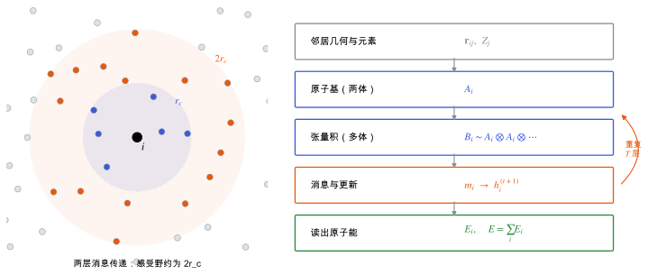

位置、路径与目录
MACE 与等变消息传递
方法节点领域：机器学习研究线：机器学习势结构预测与能量景观v0.2 · 2026-11-10
草稿已有正文，但来源和推导还没有核查完，不能当作定论。
MACE 怎样用高阶等变消息传递表示多体相互作用，预训练通用势在分子晶体上的适用范围。
直观阅读需要
- 机器学习势：原子能分解与截断半径
- 图神经网络的消息传递
只是提示，不需要先读完才能往下看。
机器学习势 里的原子能只看截断球内的邻居。要描述好化学键，原子能不仅要依赖两两距离，还要依赖三个、四个原子之间的角度关系，也就是多体 (many-body) 相互作用。
两类思路：
- 消息传递 (message passing)：每个原子从邻居那里收集信息，更新自己的特征；重复几层，信息就能传得更远，组合出更复杂的多体关系。缺点是层数多了计算慢、难以并行。
- 原子团簇展开 (ACE)：在一层之内，用邻居特征的张量积直接构造高阶多体项。
MACE 把两者结合起来：每一层先用张量积构造高阶的多体特征，再做消息传递。因为每层已经是多体的，只需要很少几层 [Batatia et al. 2022 (MACE)]。所有特征都是等变的（见 对称性与等变性），所以能量严格旋转不变。

左（示意）：两层消息传递时，中心原子 i 间接看到 2r_c 范围内的原子。右：一层 MACE 的计算流程（简化），中间两步重复 T 层。
| 符号 | 是什么 | 图里对应 |
|---|
| r_c | 每一层的截断半径 | 左图蓝色虚线圆 |
| 2r_c | 两层后的感受野 | 左图橙色点线圆 |
| \mathbf{r}_{ij},\ Z_j | 邻居相对位置和元素 | 右图第一个框 |
| A_i | 原子基：邻居信息的加权和（两体） | 右图第二个框 |
| B_i | A_i 的张量积（多体） | 右图第三个框 |
| h_i^{(t)} | 第 t 层的原子特征 | 右图第四个框 |
| E_i | 原子能 | 右图最后一个框 |
下面是简化写法，省略了通道指标和可学习权重的细节，完整形式见原文 [Batatia et al. 2022 (MACE)]。
预训练通用势
两者的训练数据来自不同的 DFT 方法，所以它们的“参考答案”不同，和你自己的 PBE-D3 计算也不一定一致。
- CSP 预优化：用 MACE 把大量候选的 β-甘氨酸类结构优化到局部极小，再挑低能结构做 PBE-D3 精修（见 晶体结构预测：搜索与排序）。重点是排序大致可靠，不是绝对能量。
- 选哪个预训练模型：有机分子晶体更接近 MACE-OFF 的训练分布；MACE-MP-0 覆盖元素更广。实际选择要在你自己的体系上用少量 DFT 结果做比较（见 基准与验证）。
- 色散：如果所用模型的训练标签不含色散，分子晶体需要另外叠加 D3；如果已含色散，再叠加就会重复计算（见 色散校正）。
- 不够准时：用自己的 PBE-D3 数据微调（见 通用机器学习势的微调）。
- 电场响应：MACE 的标准输出只有能量、力、应力，不给 Born 电荷和极化（见 机器学习势中的长程静电与电场响应）。
- 通用势当成 DFT 用：在你的体系上没验证过，误差可能比多晶型能量差还大。
- 色散重复或缺失：先确认模型训练标签是否含色散，再决定是否加 D3。
- 用在训练分布之外：例如极高压缩、断键、带电体系。
- 只看能量不看应力：变胞优化依赖应力，应力误差会直接变成晶胞误差。
相关条目机器学习势
参考资料
论文Batatia et al. 2022 (MACE)
I. Batatia, D. P. Kovács, G. N. C. Simm, C. Ortner, G. Csányi, MACE: Higher Order Equivariant Message Passing Neural Networks for Fast and Accurate Force Fields, arXiv:2206.07697 (2022)；会议版本发表于 NeurIPS 2022
版本：arXiv 预印本，按引用的版本号核对；位置：高阶等变消息传递、多体基、层数与感受野
尚未实际查阅，目前只是拟查阅书目
论文Batatia et al. 2022 (设计空间)
I. Batatia et al., The Design Space of E(3)-Equivariant Atom-Centered Interatomic Potentials, arXiv:2205.06643 (2022)
版本：arXiv 预印本，按引用的版本号核对；位置：ACE、NequIP、MACE 的统一框架
尚未实际查阅，目前只是拟查阅书目
论文Batzner et al. 2022
S. Batzner et al., E(3)-equivariant graph neural networks for data-efficient and accurate interatomic potentials, Nat. Commun. 13, 2453 (2022)
位置：NequIP：E(3) 等变图神经网络
尚未实际查阅，目前只是拟查阅书目
论文Batatia et al. 2023 (MACE-MP-0)
I. Batatia et al., A foundation model for atomistic materials chemistry, arXiv:2401.00096 (2023)
版本：arXiv 预印本，按引用的版本号核对；位置：MACE-MP-0 通用势：训练数据、适用范围、微调示例
尚未实际查阅，目前只是拟查阅书目
论文Kovács et al. 2023 (MACE-OFF)
D. P. Kovács et al., MACE-OFF: Transferable Short Range Machine Learning Force Fields for Organic Molecules, arXiv:2312.15211 (2023)
版本：arXiv 预印本，按引用的版本号核对；位置：有机分子与分子晶体的短程势
尚未实际查阅，目前只是拟查阅书目
论文雷达里的相关论文
按关键词匹配，最近的在前；点开在雷达里阅读。
关联与核验
核验与修订
暂无核验记录。
修订记录
- v0.22026-11-10初稿正文：消息传递与感受野、原子基与多体张量积、读出、MACE-MP-0 与 MACE-OFF 的定位、在分子晶体上的用法与常见坑；配图 1 张
发现问题
在 GitHub 上公开提交纠错，会附上节点编号和版本，不含你的笔记。
提交纠错